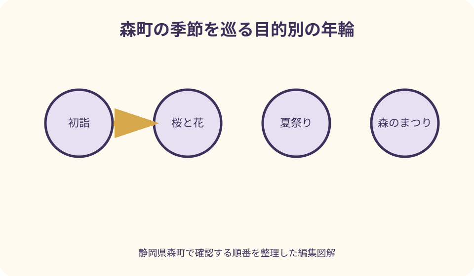
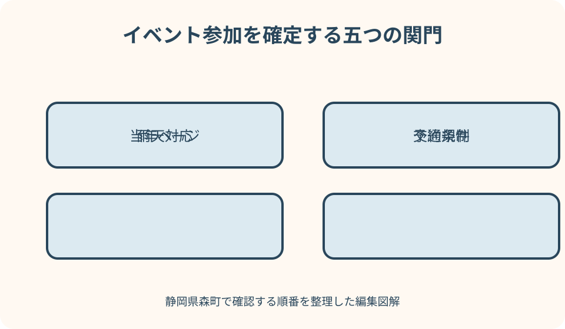

年間行事・祭り・季節の花｜最終確認 2026-08-10
静岡県森町の年間イベントカレンダー｜花・祭り・初詣を当年情報で選ぶ
森町の行事は、花の開花、神社や地域の祭礼、町や団体が開く催事で確認先が異なります。観光協会の歳時記は候補を探す年間索引として便利ですが、旅行日を決める根拠は当年の主催者告知です。このページでは固定日を転載せず、月ごとの候補と、交通規制、雨天対応、予約、混雑を調べる順番をまとめます。

編集イラスト年間カレンダーは日付表ではなく確認の入口
森町観光協会の四季のイベントには、春夏秋冬の代表的な行事と花の候補が並びます。これは旅のテーマを見つける歳時記です。同じ曜日並びになるとは限らないため、掲載された月や例年の表現だけで予約を確定しません。
町公式には、産業催事、花の開花状況、文化関係の募集や公演などが別の担当ページに掲載されます。一つの一覧だけですべてを確認するのではなく、候補名を見つけた後に当年の記事へ進む使い方が適します。
寺社の祭礼や初詣は、寺社または関係団体の案内が最終確認先になります。観光協会で名称を知り、主催者の公式で日時、参拝動線、臨時対応を調べる二段階にすると、過去記事との取り違えを減らせます。
カレンダーへ記録する項目は、行事名、候補月、主催者、確認先、公開待ち、予約要否、交通の七つです。日付欄を空白にしておけば、未発表なのに例年どおりと決める誤りを防げます。
旅行サイトや個人投稿は雰囲気を知る参考にはなりますが、開催判断には使いません。投稿された年、撮影日、荒天延期の有無が分からない情報は、現在の運営条件を保証しないからです。
当年情報を確認する四段階
第一段階は観光協会の年間行事で、訪問したい季節を広く探すことです。桜、初夏の花、夏の伝統行事、秋祭り、紅葉、年始の参拝というように、見たいものから候補を二つまで選びます。
第二段階は当年ページの有無を確かめることです。ページタイトル、更新日、本文中の開催年を見比べます。検索結果に古い回次が出た場合は、そのページ内の一覧や町公式の新着へ戻り、最新の回を探します。
第三段階は主催者資料で参加条件を読むことです。予約や整理券、入場料、受付、観覧区域、出店、持込制限は、行事名が同じでも年によって変わり得ます。チラシ画像だけでなく本文と添付資料も確認します。
第四段階は移動条件です。会場、駐車場、臨時駐車場、シャトル、最寄り駅や停留所、通行止めの区間と時間帯を確認します。通常の観光アクセスではなく、当日の交通案内を優先します。
最後に確認日をメモします。荒天予報や花の状態により直前更新があり得る行事は、前日と出発前にも同じ公式へ戻ります。保存した画像だけを見ず、更新後の本文を開きます。
冬から早春 初詣と春待ちの行事
年始は小國神社をはじめ町内の寺社への初詣が候補になります。初詣は一日だけの催しではなく、参拝者が集中する期間と落ち着く期間があります。何を優先するかで訪問日を選びます。
にぎわい、授与品、年始らしい空気を重視する人と、静かに参拝したい人では適する時間帯が違います。主催寺社の年末年始案内で、参拝動線、授与所、駐車、公共交通の臨時情報を確認します。
観光協会の歳時記には冬の寺社行事も載りますが、誰でも自由に見学できるとは限りません。神事の意味、見学区域、撮影の可否を確かめ、地域の儀礼を観光ショーのように扱わない姿勢が必要です。
早春の行事は開催間隔が毎年ではないものも候補に含まれます。前回記事を見つけても、次回が同じ月に開かれると推定せず、当年の観光協会または主催団体の発表を待ちます。
冬の山間部や朝夕は天候と路面の条件も確認します。町内が晴れていても出発地や経路が同じとは限りません。自家用車なら道路情報、公共交通なら運行情報を別に見ます。

春 桜は祭りの日より開花状況を優先
春は太田川桜堤、小國神社、戦国夢街道など、町公式の花めぐり案内に登場する桜の場所が候補になります。同じ町内でも種類、標高、日当たりで状態はそろいません。
森町公式は桜の開花状況を当年記事として更新しています。旅行日を決めるときは例年の見頃ではなく、撮影日や更新日が示された最新状況を見て、つぼみ、開花、満開後のどこを楽しむか判断します。
桜に伴う祭りやライトアップは、花が咲けば必ず実施される設備ではありません。町公式の花めぐり記事でも、年によりライトアップを実施しない旨が明記された例があります。当年の実施有無を独立して確認します。
太田川沿いを歩く日と、小國神社へ参拝する日は、同じ桜目的でも移動計画が違います。写真だけで場所を選ばず、駐車、駅からの距離、バスの運行、日没後の帰路を先に見ます。
雨の翌日や強風後は、掲載時点から花の状態が変わります。開花情報の更新が数日前なら、見頃を保証する数字とは考えず、花以外の町歩きや食事を第二目的に用意します。
初夏 あじさい・ききょう・花しょうぶを選ぶ
初夏は極楽寺のあじさい、香勝寺のききょう、小國神社周辺の花しょうぶなどが候補になります。町公式の花めぐり記事は、場所と季節の関係を把握する入口として利用できます。
花の見頃と、寺社や園の受入期間は同じ概念ではありません。開花状況、拝観や入園の案内、駐車場、雨天時の足元を、それぞれ当事者の最新情報で確かめます。
複数の花を一日で巡る場合、地図上の直線距離だけで組みません。地区間の道路、公共交通の有無、各所の滞在、昼食と休憩を含め、二か所までに絞ると花を急いで消費せずに済みます。
雨はあじさいの景観に合っても、移動の安全とは別問題です。寺の石段、未舗装部分、傘を差した人のすれ違い、濡れた靴での運転を考え、強い雨なら一か所へ縮めます。
開花写真を共有するときは、立入禁止区域や参拝者の通路を塞がないことが前提です。三脚や長時間撮影の可否は現地表示に従い、花壇へ踏み込んで構図を作りません。
夏 伝統行事と花火は暑さ・雨・帰路を確認
夏は神社の伝統行事や太田川周辺の花火など、夜間まで人が集まる候補があります。観光協会の歳時記で名称を拾い、主催者が出す当年の開催案内へ進みます。
花火は過去に同じ時期に開催されていても、当年の開催日、荒天時の扱い、観覧区域が同一とは限りません。順延なのか中止なのか、判断を発表する媒体はどこかまで確認します。
夜の行事では往路より帰路を先に作ります。終了後の駅や道路は通常時と違う混雑になります。公共交通の最終接続、徒歩経路の照明、駐車場から出る方向を同行者と共有します。
伝統的な祭礼では、舞や神事を見る区域と、氏子や関係者が進行する区域を区別します。撮影や接近について現地係員の案内を優先し、行列の前へ出て進路を妨げません。
暑さ対策は観覧中だけでなく待機列にも必要です。給水、日陰、帽子、子どもや高齢者の休憩を準備し、体調が悪ければ見どころの直前でも離脱できる集合場所を決めます。
秋 森のまつりは交通規制を予定の中心に置く
秋の代表候補である森のまつりは、町なかを舞台に人と祭礼の動きが重なる行事です。通常日の道路案内だけで到着方法を決めず、当年の主催者・関係機関の案内を探します。
確認するのは開催日だけではありません。交通規制の区域、開始と解除、車両が入れない道路、駐車案内、歩行者動線を一枚の地図で見ます。宿や食事の予約があっても規制内へ車で入れるとは限りません。
山車や行列の通過位置は、観客が自由に横断できる場所ではありません。係員の誘導、綱や車輪との距離、子どもの手を離さないことを優先し、撮影のために後退して道路へ出ません。
鉄道で訪れる場合も、駅から会場までの通常徒歩分数だけでは不十分です。人流、迂回、観覧で止まる時間を見込み、帰りの列車は一本だけに依存しない計画にします。
祭りの音や夜間のにぎわいは地域の暮らしと隣接します。私有地への侵入、無断駐車、住宅前での長時間滞在を避け、ごみを持ち帰ることまで旅程に含めます。
秋 産業祭と文化会館の催しを分けて読む
森町産業祭は、町公式の産業分野に当年ページが作られる催事です。過去回のページには出展やステージの具体例がありますが、それを次回の確定内容として転載しません。
当年記事が公開されたら、会場図、出展一覧、ステージ、販売、抽選など、自分の目的に必要な項目を選びます。すべてを見る順番を固定せず、売切れや混雑を許容できる第二候補も置きます。
産業祭の会場として文化会館周辺が使われた年があっても、文化会館の通常公演とは主催・入場方法が異なります。屋外催事の案内と、ホール公演の案内を混ぜません。
文化会館の催しは、町の広報やホールガイド、個別の募集・公演ページで確認します。無料と書かれていても申込が必要な場合があり、有料公演は発売状況や座席条件を主催者へ確かめます。
同じ日に屋外催事と館内催事がある場合、駐車場や入口の運用が普段と変わる可能性があります。施設へ行けばどちらも入れると考えず、各催しの受付と問合せ先を分けて保存します。
紅葉は祭典名・色づき・交通を別々に確認
晩秋は小國神社や大洞院などの紅葉が候補になります。観光協会の歳時記に紅葉祭の記載があっても、祭典の日と木々の見頃は同じ期間を保証しません。
色づきは気温、雨、風で進み方が変わります。主催寺社や観光協会の当年写真について、投稿日ではなく撮影時点も見て、現地に着く日までの天候を重ねて判断します。
ライトアップ、露店、特別な授与や催しは、紅葉そのものとは別の運営判断です。過去写真に写っていても当年案内に記載がなければ、実施を期待して夜間行程を組みません。
紅葉期の小國神社は、通常期より周辺道路と駐車場が混み得ます。車なら渋滞を見込んだ退出時刻、公共交通なら当年の運行、徒歩なら日没と足元を確認します。
紅葉だけを目的にすると状態が外れたときの満足が下がります。参拝、寺院の由緒、茶や菓子など、花木の状態に左右されない一つの目的を同じ地区で組み合わせます。
予約・雨天・混雑を確認する順番
最初に予約の要否と締切を見ます。参加型企画、文化公演、体験、観覧席は、現地へ行くだけでは参加できないことがあります。申込先が町、施設、実行団体のどれかも確認します。
次に雨天条件を読みます。小雨決行、荒天中止、順延、会場変更では行動が違います。判断時刻と発表媒体が示されていれば、当日どのページや連絡手段を見るか予定表へ書きます。
三番目に交通規制と駐車を見ます。臨時駐車場から歩く距離、満車時の代案、送迎車の乗降、身体的配慮が必要な人の案内を、主催者資料の地図で確認します。
四番目に混雑時の撤退条件を決めます。入場列が長い、駐車場へ入れない、同行者が疲れた場合に、待つ時間の上限と代わりの訪問先を事前に合意します。
最後に現地連絡先を控えます。ただし開催当日は電話が集中する可能性があります。公式に答えが掲載されている事項を何度も電話で聞かず、緊急性のある確認に限ります。
良い点
森町の年間行事は、桜や初夏の花、夏の祭礼、秋の町なかの祭り、産業催事、紅葉、初詣まで目的の幅があります。季節を変えて再訪する理由を作りやすい町です。
観光協会の歳時記が年間の入口になり、町公式には花の状態や産業催事の個別情報があります。候補探しと確定情報を分けて読めることは、旅行者にとって実用的です。
寺社、町なか、河川周辺、文化会館と会場の性格が異なるため、家族、写真、伝統文化、買い物、公演など同行者の関心に合わせて一つを選べます。
一つの大規模イベントだけに依存せず、自然の変化と地域の営みが年間に点在します。予定が合わない月でも、別の季節へ候補を移しやすい点が魅力です。

注文したい点
利用者側から見ると、年間歳時記、町の担当別ページ、寺社、会館、実行団体へ情報が分かれます。各当年記事から主催者、交通案内、開催可否の発表先へ相互リンクがあると確認しやすくなります。
過去回のページが検索上位に残る行事では、ページ冒頭に終了済み表示と最新回へのリンクがあると誤認を減らせます。回次だけでなく西暦を目立つ位置に置くことも有効です。
花の情報は、更新日と撮影日が異なる場合があります。地点ごとの写真に撮影日、状態、次回更新予定がそろえば、遠方の訪問者が判断しやすくなります。
交通規制図は画像だけでなく、規制区域、時間帯、対象車両、公共交通への影響を本文でも示してほしいところです。スマートフォンで拡大しなくても重要事項を読める形が望まれます。
中止や変更の発表先も行事ごとに統一して示されると安心です。公式サイト、SNS、電話、同報など複数ある場合は、最終判断をどこで告知するのかを明記してほしいです。
代案・結論
行きたい行事の当年発表がまだない場合、宿や交通を変更不能な条件で予約しません。候補月だけ決め、公開時期を前年の更新履歴から推測しつつ、当年告知を待ちます。
花が見頃から外れた場合は、同じ地区の寺社参拝、町並み、食事、買い物へ目的を切り替えます。別地区へ急いで追いかけるより、移動を増やさず森町の別の面を見る方が安全です。
荒天中止なら、屋内の文化催事が当日にあると決めつけず、文化会館の公式予定を確認します。予約不要の代案がなければ、訪問日を変えることも完成した旅行判断です。
結論として、年間カレンダーに確定日を永久保存する使い方はしません。季節の候補を選ぶ索引として使い、当年の主催者告知、交通、天候、予約を一組にして初めて予定を確定します。
大石の視点
私はイベント記事で最も怖いのは、古い日付が新しい情報の顔をして残ることだと考えます。詳しく書くほど便利になる一方、翌年には誤案内になり得ます。だから日付の転載量ではなく、最新情報へ戻れる道筋を記事の価値にします。
森町の花や祭りは、行けば同じ商品が受け取れるサービスではありません。咲き具合、天気、人出、地域の進行で体験が変わります。不確実さを隠さず、外れた日の代案まで伝える方が誠実です。
祭礼では良い写真より、地域の進行を止めないことが先です。観光客が見学できるのは、住民や関係者が長く守ってきた場へ入らせてもらうからだという距離感を忘れません。
年間に何件参加したかを競う必要もありません。一回の訪問で一つの地区、一つの主目的に絞り、交通と休憩に余白を残す方が、行事の背景や町の店までよく見えます。
出発前の最後の作業は、このページを読み返すことではなく、主催者の当年ページを開くことです。更新があれば本稿より公式を優先し、分からなければ参加を前提にしない。それが森町の行事を長く楽しむ実務です。
公式情報・確認先
掲載内容は次の一次情報を基礎に整理しました。営業、料金、催し、交通は変わるため、出発前または手続き前にリンク先で最新情報を確認してください。
- 四季のイベント（静岡県森町観光協会、2026-08-10確認）
- 森町の花めぐり動画公開（静岡県森町、2026-08-10確認）
- 桜の開花状況について（静岡県森町、2026-08-10確認）
- イベント情報（静岡県森町、2026-08-10確認）
- 観光・文化（静岡県森町、2026-08-10確認）
- 広報もりまち（静岡県森町、2026-08-10確認）